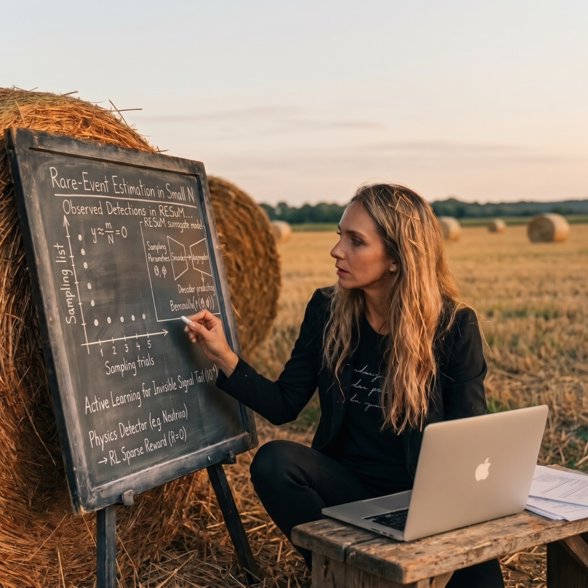
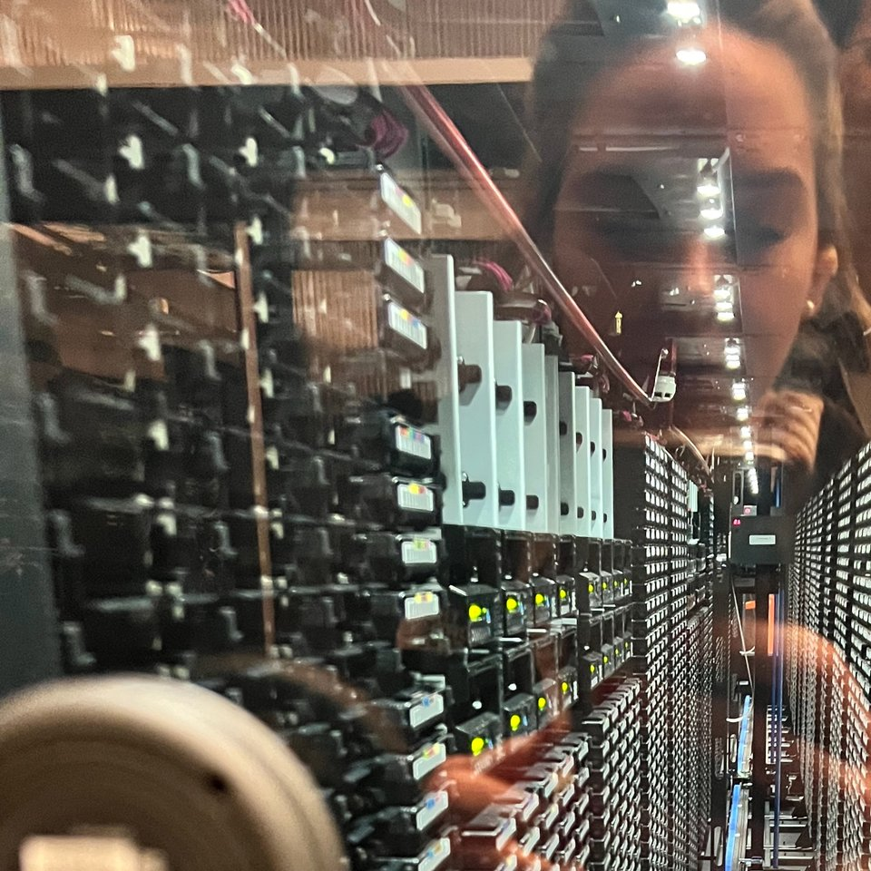

Foundations and viewpoints
Methods & Perspectives
The theory behind methods I have applied across several projects and taught many times, and perspectives on machine learning for physical systems.
01Foundations
-
Method
Estimating rare-event probabilities
Rare-event counting, conditional Monte Carlo, and neural-network estimates of conditional hit probabilities.
-
 Method
MethodLearning in the rare-event regime
Why a 99.9%-accurate model can miss every rare event, why hits and background overlap, and where standard machine-learning methods fail.
02Perspectives
-

EssayHunting the improbable: rare-event physics and reinforcement learning
Importance sampling, conditional Monte Carlo, where each one fails, and an idea for combining them.
-

PerspectiveThe hidden work behind AI for science
Data generation, computing bottlenecks, and scientific validation in machine-learning pipelines.